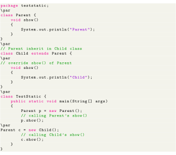
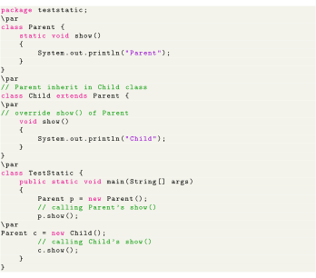

Next: Java Keywords Up: Static vs. Non-static routines Previous: Binding process Contents
It is not possible to override a static method, because of early binding.

In non-static method, we can override a non-static method. Because for override we need runtime polymorphism, which is happens only in runtime binding.

This code throws below error in Eclipse.